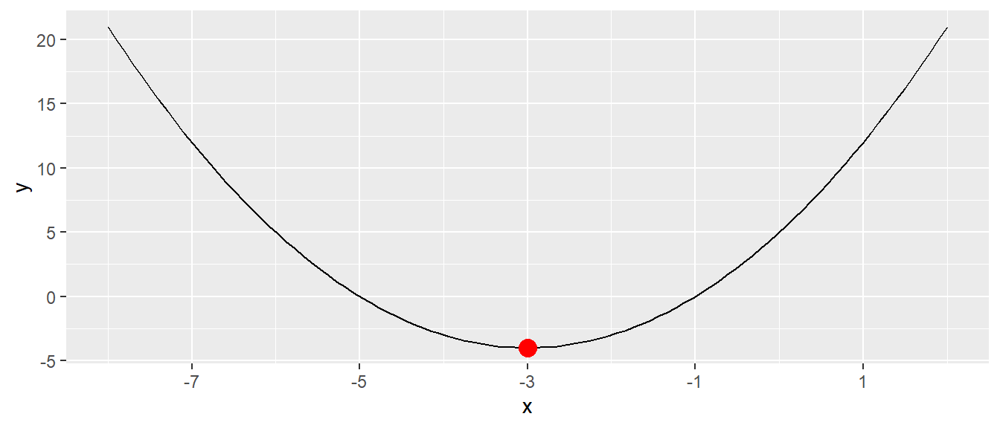
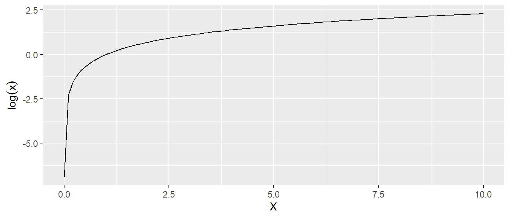
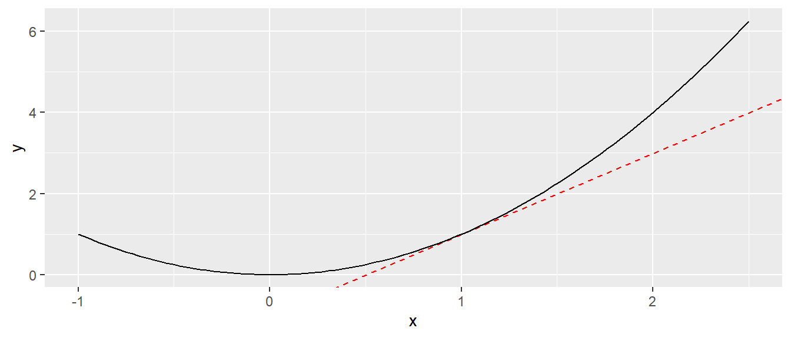
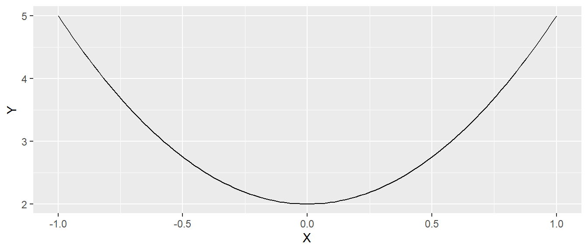
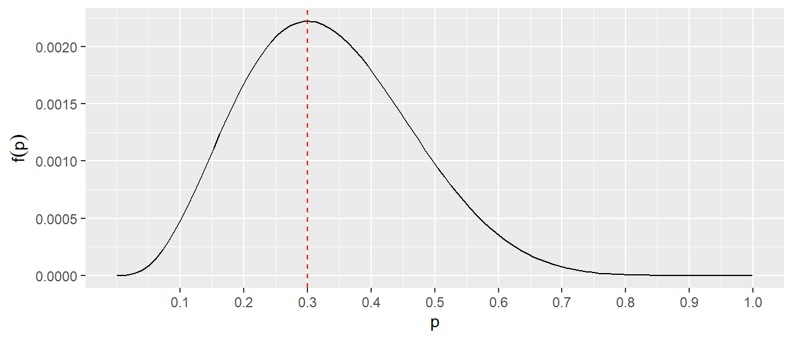
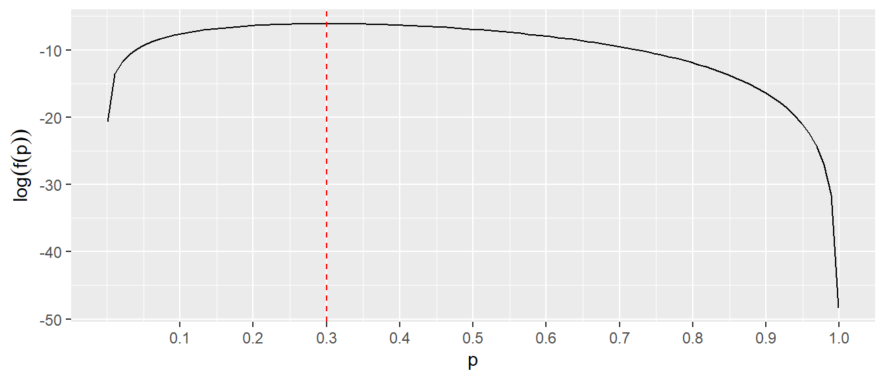

| \(i\) | \(x_i\) |
|---|---|
| 1 | 10 |
| 2 | 20 |
| 3 | 30 |
| 4 | 35 |
| 5 | 40 |
Anhang A — Mathematische Grundlagen
A.1 Rechenregeln basics
Hier eine kurze Wiederholung der üblichen Rechenregeln, die aus der Schule bekannt sein sollten. Dies sind einmal die Klammer vor Punkt vor Strich Regel
\[\begin{align*} 1 + 3 \times 2 &= 7 \\ 7 + 12 / 4 &= 10 \\ (3 + 7) / 5 + 1 &= 3 \end{align*}\]
Und das Distributivgesetz zum ausmultiplizieren bzw. zusammenfassen von Klammern.
\[\begin{align*} a \times (b + c) &= a\times b + a\times c \\ 2 \times (3 + 4) &= 2 \times 3 + 2 \times 4 \\ 10 a + a b &= a (10 + b) \end{align*}\]
Was auch noch bekannt sein sollte, sind die Binomischen Formeln.
\[\begin{align*} (a+b)^2 &= a^2 + 2ab + b^2 \\ (a-b)^2 &= a^2 - 2ab + b^2 \\ (a+b)(a-b) &= a^2 - b^2 \end{align*}\]
Ein immer wiederkehrender Operator in der Statistik ist das Summenzeichen \(\sum\). Das Summenzeichen hat üblicherweise einen Laufindex der unter dem Summenzeichen steht zusammen mit einem Anfangswert. Über dem Summenzeichen steht der Endwert für den Laufindex. Für den Laufindex werden meistens die Buchstaben \(i,j,k\) verwendet. Dies ist aber keine feste Regel sondern, wie immer in der Mathematik ist jeder Buchstabe ist möglich da der Buchstabe nur ein Platzhalter ist. Für jeden Wert des Laufindex wird ein Summand erstellt. Zum Beispiel.
\[\begin{equation*} \sum_{i=0}^{2} i = (i=0) + (i=1) + (i=2) = 0 + 1 + 2 = 6 \end{equation*}\]
Hier ist der Laufindex \(i\) mit dem Startwert \(i=0\) und dem Endwert \(i=2\). Die Index durchläuft alle Ganzzahlen zwischen dem Start- und dem Endwert. In den meisten Fällen wird der Laufindex nicht direkt in den Summanden geschrieben sondern es wird ein bestimmte Menge von weiteren Werten damit indiziert. Sei zum Beispiel eine Menge von sechs Datenpunkte z.B. \(\{10, 20, 30, 35, 40\}\) gegeben. Dann könnten diese Datenpunkte mittels einer Variablen beispielsweise dem Buchstaben \(x\) repräsentiert werden und die einzelnen Werte mit Hilfe eines Laufindexes bestimmt werden (siehe Tabelle A.1).
Soll nun über alle Datenpunkte summiert werden dann kann dies wie folgt mittels des Zusammenzeichen dargestellt werden.
\[\begin{equation*} \sum_{i=1}^5 x_i = 10 + 20 + 30 + 35 + 40 = 135 \end{equation*}\]
Für das Summenzeichen gelten, es sich letztendlich nur um Addition handelt, die gleichen Regeln wie bei der einfachen Summation. Dementsprechend ergeben sich die folgenden Regeln:
\[\begin{align} \sum_{i=0}^{n}(a_i+b_i) &= \sum_{i=0}^{n}a_i + \sum_{i=0}^{n}b_i \\ \sum_{i=0}^{n}a \times b_i &= a\sum_{i=0}^{n}b_i \label{eqn:asum} \\ \sum_{k=1}^{n} \frac{a_k}{n} &= \frac{1}{n}\sum_{k=1}^{n} a_i = \frac{1}{n}(a_1 + a_2 + \ldots + a_n) \\ \sum_{i=1}^{n} a &= a + a + \ldots + a = n \times a \label{eqn:consum} \end{align}\]
Neben dem Summenzeichen, kommt auch immer wieder mal das Produktzeichen \(\prod\) zur Anwendung. Wie der Name schon vermuten lässt, wird bei dem Produktzeichen die Addition durch die Multiplikation ersetzt.
\[\begin{equation} \prod_{i=0}^n x_i = x_1 \times x_2 \times \cdots \times x_n \end{equation}\]
Wieder angewendet auf eine Menge von Datenpunkte \(\{1,2,3\}\) könnte das Produkt der Zahlen wie folgt dargestellt werden.
\[\begin{equation*} \prod_{i=1}^3 x_i = 1 \cdot 2 \cdot 3 = 6 \end{equation*}\]
Für das Produkt ergeben sich auch wieder ein paar Rechenregeln:
\[\begin{equation*} \prod_{i=0}^n a \cdot x_i = a \prod_{i=0}^n x_i \end{equation*}\]
A.2 Funktionen
A.2.1 Lineare Funktion
Der einfachste Typ von Funktion nach den konstanten Funktion \(f(x) = a\) ist die Gerade bzw. lineare Funktion. Die Funktion der Gerade setzt sich aus einem \(y\)-Achsenabschnitt \(a\) und einer Steigung \(b\) zusammen.
\[\begin{equation} y = a + bx \end{equation}\]
Aus der Schule dürfte dies als Punkt-Steigungsform (vielleicht in der Form \(y = mx + b\)) bekannt sein. Bei einer positiven (negativen) Steigung (\(a > 0\)) steigen (fallen) die \(y\)-Werte gegen \(\infty\) (\(-\infty\)) wenn die \(x\)-Werte gegen \(\infty\) (\(-\infty\)) gehen. In Abbildung A.1 ist der Graph der Funktion \(y = 3x + 1\) abgetragen.

In Abbildung A.1 ist zu erkennen, dass auf Grund der positiven Steigung \(b = 3\) die \(y\)-Werte größer werden, umso größer die \(x\)-Werte werden. Der Zuwachs der \(y\)-Werte ist dabei konstant. Wenn \(x\) um eine Einheit vergrößert wird, dann vergrößert sich \(y\) um \(3\) Einheiten.
Die Gerade kann als eine Funktion angesehen welche \(x\)-Werte auf \(y\)-Werte abbildet. \(y = a + bx\) kann daher auch als \(f(x) = a + bx\) interpretiert werden. Bzw. im konkreten Fall von Abbildung A.1 als \(f(x) = 3x + 1\). D.h. wenn ich einen \(x\)-Wert in die Funktion \(f(x)\) einsetzte, wird der entsprechenden \(y\)-Wert erhalten, z.B. \(f(2) = 3 \times 2 + 1 = 7\).
A.2.2 Polynome
Ein Polynom ist ein mathematischer Ausdruck, der aus einer Summe von mehreren Termen besteht, wobei jeder Term aus einer Konstanten (dem Koeffizienten) und einer oder mehreren Variablen, die mit einer Potenz versehen sind, besteht. Ein Beispiel ist die Funktion:
\[\begin{equation*} 3x^2 + 2x - 5 \end{equation*}\]
Die höchste Potenz der Variable bestimmt den Grad des Polynoms; in diesem Fall ist der Grad 2, da \(x^2\) die höchste Potenz ist. Polynome der ersten drei Grade haben eigene Bezeichnungen.
- Lineares Polynom: Ein Polynom vom Grad 1, z.B. \(2x + 3\). Der Graph ist immer eine Gerade und daher ist eine lineare Funktion auch ein Polynom 1. Grades.
- Quadratisches Polynom: Ein Polynom vom Grad 2, z.B. \(x^2 - 4x + 4\). Der Graph ist eine Parabel.
- Kubisches Polynom: Ein Polynom vom Grad 3, z.B. \(x^3 + x - 6\). Der Graph hat eine geschwungene Form mit möglichen Wendepunkten.


Mit Hilfe des Summenzeichens lässt sich ein Polynom ebenfalls kurz darstellen.
\[\begin{equation*} \prod_{i=0}^n a_i x^i = a_0 + a_1 \cdot x + a_2 \cdot x^2 + \cdots + \end{equation*}\]
Im Zusammenhang mit dem Lösen von quadratischen Gleichung sollte noch die p-q-Formel geläufig sein. Wenn eine Gleichung der Form \(x^2 + p\cdot x q = 0\), also ein Polynom zweiten Gerades gelöst werden soll, dann kann diese relativ simple über die p-q-Formel durchgeführt werden.
\[ x_{1,2} = -\frac{p}{2}\pm\sqrt{\left(\frac{p}{2}\right)^2-q} \tag{A.1}\]
Der Term unter der Wurzel wird als die Diskriminante bezeichnet und es können drei Fälle unterschieden werden.
\[ \left(\frac{p}{2}\right)^2-q = \begin{cases} > 0: \text{zwei Lösungen} \\ =0: \text{eine Lösung} \\ < 0: \text{keine reele Lösung} \end{cases} \]
Beispiel A.1 Es soll die folgende Gleichung gelöst werden:
\[ x^2 + 4x + 3 = 0 \Rightarrow p=4, q=3 \] Mit \(p = 4\) und \(q=3\) folgt durch einsetzen in Gleichung A.1:
\[ x_{1,2} = -\frac{4}{2}\pm\sqrt{\left(\frac{4}{2}\right)^2-3} = -2 \pm 1 \]
Manchmal kann auch ein Trick angewendet werden um eine Lösung mittels einer Quadratischen Ergänzung zu erhalten. Sei Beispielsweise das folgende Polynom gegeben und von Interesse ist der Scheitelpunkt des Graphen.
\[ f(x) = x^2 + 6x + 5 \]
Die ersten beiden Terme \(x^2 + 6x\) sehen in etwa so aus, wie ein Teil der binomischen Formel. Der Term \(3x\) wäre dementsprechend der Teil \(+2ab\) während \(x^2\) der Term \(a^2\) wäre woraus folgt das \(a=x\) ist. D.h. es fehlt jetzt noch der Wert für \(b\). Mit \(a=x\) folgt jedoch:
\[ 6x = 2ab = 2xb \]
Daraus lässt sich nun wieder ablesen, dass \(b = 3\) sein muss. Um nun die binomische Formel mittels quadratischer Ergänzung zu vervollständigen fehlt in der Ursprungsformel Formel \(x^2 + 6x + 5\) der Term \(b^2 = 9\). Dazu wird nun \(0\) in der Form \(+9 - 9\) zu der Formel hinzugefügt.
\[ x^2 + 6x + 9 - 9 + 5 = x^2 + 6x + 9 - 4 \]
Die ersten drei Terme können nun mittels der binomischen Formel zusammengefasst werden.
\[ x^2 + 6x + 9 - 4 = (x+3)^2-4 \] Damit liegt der Scheitelpunkt der Parabel bei \((-3,-4)\).

Die quadratische Ergänzung findet immer wieder im Zusammenhang mit der Normalverteilung eine Anwendung, wenn der Term im Exponent auf die Standardform gebracht werden muss.
A.2.3 Exponentialfunktion
Eine Exponentialfunktion ist eine mathematische Funktion der Form:
\[\begin{equation*} f(x) = a \cdot b^x \end{equation*}\]
Der Term \(a\) ist eine Konstante während \(b\) als Basis bezeichnet wird. Die Basis \(b\) ist eine positive Zahl, die größer als null ist und bestimmt, wie schnell die Funktion wächst oder abnimmt. Wenn \(b>1\) gilt, dann wächst die Funktion exponentiell, was bedeutet, dass die Funktion immer schneller ansteigt. Wenn \(0< b<1\), sinkt die Funktion exponentiell, was bedeutet, dass die Funktion immer langsamer abnimmt.
Exponentialfunktionen werden oft verwendet, um Wachstum oder Zerfall zu beschreiben, wie z. B. das Wachstum einer Bakterienkultur, das Bevölkerungswachstum oder den radioaktiven Zerfall. Ein charakteristisches Merkmal von Exponentialfunktionen ist, dass sich der Wert bei einem festen Abstand auf der x-Achse immer um den gleichen Faktor ändert, was zu einem sehr schnellen Anstieg oder Abfall führen kann. Bei Beispiel für eine exponentiellen Funktion könnte z.B. \(f(x) = 2 \cdot 4^x\) sein.

Eine zentrale Rolle in der Statistik, wie auch in der restlichen Mathematik, spielt die Exponentialfunktion zur Basis \(e\), die als natürliche Exponentialfunktion bezeichnet wird. \(e\) ist die Euler’sche Zahl und hat ungefähr den Wert \(e \approx 2,718\). In der Statistik kommt die natürliche Exponentialfunktion oft in der folgenden Form vor:
\[ f(x) = a \cdot e^{bx} \] Hierbei ist \(a\) der Wert den Funktion für \(x=0\), der y-Achsenabschnitt, einnimmt, während die Konstante \(b\) die Steigung verändert. In Abbildung A.5 sind verschiedene natürliche Exponentialfunktionen abgetragen.


Für die Exponentialfunktion gelten die folgenden Rechenregeln:
\[\begin{align*} a^m \cdot a^n &= a^{m+n} \\ \frac{a^m}{a^n} &= a^{m-n}, \quad (a \neq 0) \\ (a^m)^n &= a^{m \cdot n} \\ (a \cdot b)^n &= a^n \cdot b^n \\ \left(\frac{a}{b}\right)^n &= \frac{a^n}{b^n}, \quad (b \neq 0) \\ a^0 &= 1, \quad (a \neq 0) \\ a^{-n} &= \frac{1}{a^n}, \quad (a \neq 0) \\ a^1 &= a \end{align*}\]
Eine Exponentialfunktion \(f(x) = a \cdot b^x\) mit \(a>0\) und Basis \(b>1\) ist streng monoton wachsend.
\[ x_1 < x_2 \Rightarrow a\cdot b^{x_1} < a\cdot b^{x_2} \]
Für \(0<b<1\) ist die Funktion streng monoton fallend, während sie für \(b=1\) konstant ist.
A.2.4 Logarithmus
Die Umkehrfunktion zur Exponentialfunktion ist der Logarithmus. Die Logarithmusfunktion ist insbesondere im Zusammenhang mit dem Maximum-Likelihood Prinzip in der Statistik von großer Bedeutung.
Der Logarithmus einer positiven Zahl \(x\) zur Basis \(b>0\), \(b \neq 1\), ist diejenige Zahl \(y\), für die gilt:
\[ \log_b(x) = y \quad \Longleftrightarrow \quad b^y = x. \]
Dies bedeutet, dass der Logarithmus angibt, zu welcher Potenz die Basis \(b\) erhebt werden muss, um den Wert von \(x\) zu erhalten. In der Statistik wird meist der natürliche Logarithmus verwendet, der Logarithmus zur Basis \(e \approx 2{,}718\), der mit \(\log(x)\) oder \(\ln(x)\) bezeichnet wird. Der natürliche Logarithmus ist die Umkehrfunktion zur natürlichen Exponentialfunktion \(f(x) = e^x\). Es gilt.
\[ \log(e^x) = x \]
Der Graph des natürlichen Logarithmus \(\log(x)\) sieht wie folgt aus (siehe Abbildung A.6).

Für das Argument \(x\) der Logarithmusfunktion gilt, dass \(x>0\) sein muss, d.h. die Logarithmusfunktion ist auf \(\mathbb{R}^+\) definiert. Der Logarithmus ist ebenfalls für \(b>1\) eine streng monoton wachsende Funktion Funktion, d.h. es gilt:
\[ x_1 < x_2 \Rightarrow \log_b(x_1) < \log_b(x_2). \]
Für die Logarithmusfunktion gelten die folgenden Rechenregeln.
\[\begin{align*} \log_b (x \cdot y) &= \log_b (x) + \log_b (y) \\ \log_b \left(\frac{x}{y}\right) &= \log_b (x) - \log_b (y) \\ \log_b (x^n) &= n \cdot \log_b (x) \\ \log_b (1) &= 0 \end{align*}\]
Insbesondere die erste Rechenregel die aus einer Multiplikation eine Addition macht, wird in der Statistik als Trick zur Vereinfachungen von Berechnungen relativ oft eingesetzt.
Beispiel A.2 Sei zum Beispiel das Produkt aus drei Zahlen \(x_1\), \(x_2\) und \(x_3\) gegeben.
\[\begin{equation*} \prod_{i=1}^3 x_i = x_1 \cdot x_2 \cdot x_3 \end{equation*}\]
Dann kann aus der Multiplikation eine Addition gemacht werden, indem auf das Produkt der Logarithmus angewendet wird. .
\[ \log\left(\prod_{i=1}^3 x_i \right) = \log(x_1 \cdot x_2 \cdot x_3) \]
Unter der Anwendung der Rechenregeln folgt nämlich:
\[ \log(x_1 \cdot x_2 \cdot x_3) = \log(x_1) + \log(x_2) + \log(x_3) \]
D.h. aus der Multiplikation ist eine Addition geworden.
Beispiel A.3 Die Addition aus Subtrakionsregel kann zum Beispiel benutzt werden um Große Logarithmen schnell schnell im Kopf zu rechnen.
\[ \log_2(128) = \log_2(4\cdot32) = \log_2(4) + \log_2(32) = 2 + 5 = 7 \]
A.3 Ableitung
In der Schule haben Ableitungen kennengelernt. Zur Erinnerung, die Ableitung einer Funktion \(y = f(x)\) beschreibt, wie stark sich der Funktionswert \(y\) ändert, wenn der Eingabewert \(x\) um einen kleinen Betrag \(h\) verändert wird. Genauer gesagt misst die Ableitung die momentane Änderungsrate der Funktion \(f(x)\) an einer bestimmten Stelle \(x\). Formal schreibt man für die Ableitung \(f'(x)\) der Funktion \(f(x)\) an der Stelle \(x\):
\[ \frac{d f(x)}{dx} = \lim_{h \to 0} \frac{f(x+h) - f(x)}{h} \tag{A.2}\]
Für die Ableitung wird auch die Kurzschreibweise \(\frac{d f(x)}{dx} = f'(x)\). Die Ableitung \(f'(x)\) beantwortet die Frage, wie stark ändert sich \(f(x)\), wenn man ein winzig kleines Stück \(h\) weitergeht. Das Stück \(h\) lässt man immer kleiner werden \(\lim_{h to 0}\). So erhält man die Steigung der Tangente an die Kurve von \(f(x)\) im Punkt \(x\). Hier zur Erinnerung noch mal ein Übersicht über die wichtigsten Ableitungsregeln für Polynome.
| Art | Regel | Beispiel |
|---|---|---|
| Potenz von \(x\) | \(\frac{d}{dx} \left( x^n \right) = n x^{n-1}\) | \(\frac{d}{dx} \left( x^5 \right) = 5x^4\) |
| Konstante | \(\frac{d}{dx}(c) = 0\) | \(\frac{d}{dx}(7) = 0\) |
| konstanter Faktor | \(\frac{d}{dx} \left( c \cdot f(x) \right) = c \cdot f'(x)\) | \(\frac{d}{dx} \left( 3x^4 \right) = 3 \cdot 4x^3 = 12x^3\) |
| Summe | \(\frac{d}{dx} \left( f(x) + g(x) \right) = f'(x) + g'(x)\) | \(\frac{d}{dx} \left( x^3 + 2x \right) = 3x^2 + 2\) |
Allgemein folgt aus diesen Regeln für ein Polynom vom Grad \(n\):
\[ f(x) = a_n x^n + a_{n-1} x^{n-1} + \dots + a_1 x + a_0 \]
gilt:
\[ f'(x) = n a_n x^{n-1} + (n-1)a_{n-1} x^{n-2} + \dots + a_1 \]
Sei zum Beispiel die Funktion \(y = f(x) = x^2\) gegeben und es soll die Steigung der Parabel im Punkt \(x = 1\) berechnet werden. Aus der Ableitungsregel für die Potenz folgt \(f'(x) = \frac{d x^2}{dx} = 2x\). Somit ergibt sich für die Ableitung im Punkt \(x = 1\) für die Ableitung und die Steigung in \(x\) der Wert \(f'(2) = 2 \cdot 2 = 4\). In Abbildung A.7 ist die Ableitung als die Tangente an \(f(x)\) im Punkt \(x = 1\) abgetragen.

Eine Regel die in der Statistik immer wieder zur Anwendung kommt, ist die sogenannte Kettenregel, wenn zwei Funktionen ineinander verschachtelt sind. Sei zum Beispiel die Funktionen \(h(x) = x^2\) und \(g(x) = \frac{1}{x}\) gegeben. Dann kann eine neue Funktion gebildet werden, indem die Funktion \(h(g(x))\) gebildet wird. Im Beispiel würde dies bedeuten:
\[ h(g(x)) = h\left(\frac{1}{x}\right) = \left(\frac{1}{x}\right)^2 \]
Dieser Funktion kann ein neues Symbol, zum Beispiel \(f(x)\), gegeben werden:
\[ f(x) = \left(\frac{1}{x}\right)^2 \]
Wenn nun die Funktion \(f(x)\) nach \(x\) abgeleitet werden soll, dann wird dazu die Kettenregel angewendet, wörtlich aus der Schule “äußere Ableitung mal innere Ableitung”.
\[ \frac{d}{dx} , g(h(x)) = g'(h(x)) \cdot h'(x) \]
Beispiel A.4 (Ableitung von \(f(x) = (x^2 + 1)^3\)) Sei \(f(x)\) gegeben durch.
\[ f(x) = (x^2 + 1)^3 \]
Dann ist die äußere Funktion: \(g(u) = u^3\) und die innere Funktion \(h(x) = x^2 + 1\), mit den Ableitungen
\[ g'(u) = 3u^2, \quad h'(x) = 2x \]
Eingesetzt ergibt sich für für die Ableitung von \(f(x)\):
\[ \frac{d f(x)}{dx} = g'(h(x)) \cdot h'(x) = 3(x^2 + 1)^2 \cdot 2x = 6x(x^2 + 1)^2 \]
Beispiel A.5 (Ableitung von \(f(x) = \sqrt{2x + 5}\)) Sei nun \(f(x) = \sqrt{2x + 5}\) geben, mit der Wurzel als Potenz geschrieben \(f(x) = (2x+5)^{1/2}\) ergibt sich, für die äußere Funktion: \(g(u) = u^{1/2}\) und für die innere Funktion: \(h(x) = 2x+5\). Damit folgt für die Ableitung der beiden Funktionen \(g'(u) = \tfrac{1}{2}u^{-1/2}, h'(x) = 2\). Daraus resultiert für die Ableitung von \(f(x)\).
\[ f'(x) = g'(h(x)) \cdot h'(x) = \tfrac{1}{2}(2x+5)^{-1/2} \cdot 2 = \frac{1}{\sqrt{2x+5}} \]
Beispiel A.6 (Ableitung von \(f(x) (3x^2-x)^4\)) Als letztes Beispiel sei die Funktion \(f(x) = (3x^2 - x)^4\) gegeben. Daraus können die folgenden Funktionen bestimmt werden, \(g(u) = u^4\) und \(h(x) = 3x^2 - x\) und es folgt für die Ableitungen, \(g'(u) = 4u^3, h'(x) = 6x - 1\), und es ergibt sich für die Ableitung von \(f(x)\), \(f'(x) = 4(3x^2 - x)^3 (6x - 1)\).
Zwei weitere Regeln sind im Zusammenhang für die Inhalte im Skript wichtig. Dies sind einmal die Ableitung für die natürliche Exponentialfunktion, es gilt für \(f(x) = e^x\):
\[ \frac{d f(x)}{dx} = \frac{d e^x}{dx} = e^x \] Unter Anwendung der Kettenregel gilt somit für \(f(x) = a \cdot e^{bx}\)
\[ \frac{d f(x)}{dx} = \frac{d~ae^{bx}}{dx} = abe^x \]
Für den natürlichen Logarithmus \(\ln(x)\) gilt die folgende Regel für die Ableitung.
\[ \frac{d\ln(x)}{dx} = \frac{1}{x} \]
A.4 Extremwerte einer Funktion
Extremwerte sind die höchsten oder tiefsten Punkte einer Funktion. In der Mathematik wird zwischen Hochpunkten (Maxima) und Tiefpunkten (Minima) unterschieden. Um Extremwerte eine Funktion \(f(x)\) zu finden, wird zunächst die Ableitung \(\frac{d f(x)}{dx}\) der Funktion gebildet. Punkte an denen die Steigung von \(f(x)\) gleich Null ist, also die Ableitung den Wert Null annimmt \(f'(x) = 0\), können potentiell einen Extremwert darstellen. Dementsprechend wird die Ableitung \(f'(x)\) der Funktion \(f(x)\) gleich null gesetzt und die entstehende Gleichung wird nach \(x\) gelöst.
Die Lösungen dieser Gleichung sind die Kandidaten für Extremwerte. Um herauszufinden, ob die gefundenen Punkte Hoch- oder Tiefpunkte sind, muss dann die zweite Ableitung der Funktion betrachtet werden. Die folgenden Fälle können unterschieden werden:
- Wenn \(f''(x) > 0\) an einem Punkt \(x\), dann handelt es sich um ein Minimum (Tiefpunkt).
- Wenn \(f''(x) < 0\), dann ist es ein Maximum (Hochpunkt).
- Wenn \(f''(x) = 0\), ist der Test nicht eindeutig und du musst andere Methoden verwenden.
Um die Extremwerte zu bekommen müssen dann die Werte der Funktion \(f(x)\) an den gefundenen Extrempunkten berechnet werden, um herauszufinden, wo die höchsten und tiefsten Punkte liegen.
Beispiel A.7 (Extremwerte 1) Es soll der Extremwert der Funktion \(f(x) = 3x^2+2\) gefunden werden.

Dazu werden zunächst die ersten und zweite Ableitung gebildet:
\[\begin{align*} f(x) &= 3x^2 + 2 \\ f'(x) &= 6x \\ f''(x) &= 6 \end{align*}\]
Die erste Ableitung wird gleich null gesetzt und gelöst:
\[\begin{equation*} 6x = 0 \Rightarrow x = 0 \end{equation*}\]
Da die zweite Ableitung eine positive Konstante ist, haben wir bei \(x=0\) den einzigen Extremwert, ein Minimum, gefunden, wie in Abbildung A.8 auch visuell zu erkennen ist.
Bei der Bestimmung eines Extremwertes einer Funktion \(f(x)\) ist es manchmal möglich die Berechnung zu vereinfachen, indem die Funktion \(f(x)\) zunächst mit einer anderen Funktion \(g(x)\) transformiert wird und die neue Funktion \(g(f(x))\) gebildet wird. Wenn die Funktion \(g(x)\) die Eigenschaft hat streng monoton wachsend zu sein, dann ist nämlich garantiert, dass das Maximum von \(f(x)\) und Maximum von \(g(f(x))\) an der gleichen Stelle \(x\) liegen.
Für das Maximum einer Funktion \(f(x)\) gilt für eine streng monoton wachsende Funktion \(g(x)\) formal.
\[ \arg\max_{x} f(x) = \arg\max_{x} g(f(x)) \]
Beispiel A.8 Die Logarithmusfunktion ist eine streng monoton wachsende Funktion, d.h. mit \(g(x) = \log(x)\) kann eine Funktion transformiert werden um möglicherweise einen Extremwert einfacher zu erhalten. Soll nun das Maximum einer Funktion \(f(x)\) gefunden werden und die Funktion enthält die Multiplikation von Termen, dann kann unter Umständen durch die Anwendung der Logarithmusfunktion die Form der Funktion vereinfacht werden kann.
Sei zum Beispiel die Funktion \(f(p) = p^x (1-p)^{n-x}\) gegeben (\(x\) und \(n\) sind unbestimmte Konstanten) und es soll das Maximum dieser Funktion für \(p\) bestimmt werden. Wird nun die Logarithmusfunktion auf \(f(p)\) angewendet ergibt sich der folgende Ansatz:
\[ \begin{align*} f(p) &= p^x(1-p)^{n-x} \\ \log(f(p)) &= \log(p^x (1-p)^{n-x}) \\ &= \log((p^x) \cdot ((1-p)^{n-x})) \\ &= \log(p^x) + \log((1-p)^{n-x}) \quad \text{Regel 1} \\ &= x\log(p) + (n-x)\log(1-p) \quad \text{Regel 3} \end{align*} \]
Nun wird die Ableitung von diesem Ausdruck berechnet unter Beachtung der Regel \(\frac{d}{dx}\log(x)=\frac{1}{x}\) und \(n\) und \(x\) und somit auch \(n-x\) Konstanten folgt:
\[ \begin{align*} \frac{d}{dp} \log(f(p)) &= \frac{d}{dp}\left(x\log(p) + (n-x)\log(1-p)\right) \\ &= \frac{d}{dp}x\log(p) + \frac{d}{dp}(n-x)\log(1-p) \\ &= x\frac{d}{dx}\log(p) + (n-x)\frac{d}{dp}\log(1-p) \\ &= x\frac{1}{p} + (n-x)\frac{1}{(1-p)}\cdot (-1) \quad\text{(Kettenregel)} \\ &= \frac{x}{p} - \frac{n-x}{1-p} \\ \end{align*} \]
Dieser Ausdruck kann nun mit Null gleichgesetzt werden um eine Extremum zu bestimmen.
\[ \begin{align*} \frac{x}{p} - \frac{n-x}{1-p} &= 0 && \mid +\frac{n-x}{1-p}\\ \Leftrightarrow \frac{x}{p} &= \frac{n-x}{1-p} && \mid \cdot p, \cdot (1-p)\\ \Leftrightarrow x(1-p) &= (n-x)p && \\ \Leftrightarrow x-px &= np - px && \mid +px \\ \Leftrightarrow x &= np && \mid \frac{1}{n} \\ \Leftrightarrow p &= \frac{x}{n} && \end{align*} \]
Die Funktion \(f(p) = p^x (1-p)^{n-x}\) nimmt also für den Wert \(p = \frac{x}{n}\) ein Maximum an. In Abbildung A.9 ist der Graph von \(f(p)\) für die Konstanten \(x=3\) und \(n=10\) abgetragen, einmal auf der Skala für \(f(p)\) und für \(log(f(p))\) abgetragen.


Es ist zu erkennen, dass in beiden Fällen das Maximum der Funktion an der gleichen Stelle sitzt. Insgesammt konnte daher, durch die Anwendung der Logarithmustransformation das Maximum mit einigen wenigen algebraischen Regeln ermittelt werden. Der Weg über \(f(x)\) wäre deutlich aufwendiger gewesen.
A.5 Vektoren
Ein Vektor ist eine mathematische Größe, die sowohl eine Richtung als auch eine Länge (Magnitude) hat. Man kann sich einen Vektor als einen Pfeil vorstellen, der von einem Punkt zu einem anderen zeigt. Zum Beispiel könnte ein Vektor in der Geometrie die Bewegung von einem Punkt A zu einem Punkt B darstellen. Vektoren werden oft in der Form \(\mathbf{a} = (x, y)\) dargestellt, wobei \(x\) und \(y\) die Komponenten des Vektors sind. Üblich ist die Darstellung als sogenannte Spaltenvektoren.
\[ \mathbf{a} = \begin{pmatrix}x\\y \end{pmatrix} \]
Die Anzahl der Komponenten gibt die Dimension des Vektor an. Im Beispiel hat der Vektor \(\mathbf{a}\) die beiden Komponenten \(x\) und \(y\), entsprechend folgt:
\[ \text{Dim}(\mathbf{a}) = 2 \] Soll entsprechend ein Punkt in einem dreidimensionalen Raum mittels eines Vektors \(\mathbf{v}\) dargestellt werden, folgt:
\[ \mathbf{v} = \begin{pmatrix} x \\ y \\ z \end{pmatrix} \] Mit Dim\((\mathbf{v})=3\). Insgesamt folgt daraus, dass ein Vektor eine geordnete Menge von Element ist. D.h. die beiden Vektoren \(\mathbf{a}\) und \(\mathbf{b}\) mit:
\[ \mathbf{a} = \begin{pmatrix} 2 \\ 3\end{pmatrix}\quad \mathbf{b} = \begin{pmatrix}3 \\2 \end{pmatrix} \] Sind nicht gleich, \(\mathbf{a} \neq \mathbf{b}\). Oft werden die Komponenten eines Vektors mittels eines Index z.B. \(i\) gekennzeichnet. Sei zum Beispiel \(\mathbf{a}\) ein Vektor mit \(n\) Elementen, dann ist die folgende Darstellung ebenfalls üblich.
\[ \mathbf{a} = \begin{pmatrix} a_1\\ a_2 \\ \vdots \\ a_n \end{pmatrix} \]
Daraus folgt für die Gleichheit von zwei Vektoren \(\mathbf{a}\) und \(\mathbf{b}\), dass gelten muss:
\[ a_i = b_i, \forall i \in 1,2,\ldots,n \Rightarrow \mathbf{a} = \mathbf{b} \]
Ein Vektor kann flach dargestellt werden, als sogenannter Zeilenvektor.
\[ \mathbf{a} = \begin{pmatrix} a_1, a_2, \ldots, a_n\end{pmatrix} \]
Ein Spaltenvektor zu einem Zeilenvektor (und umgekehrt) durch transponieren, eine Operation die im Zusammenhang mit Matrizen nochmal wichtiger wird.
\[ \mathbf{a} = \begin{pmatrix}x \\ y\end{pmatrix} \Rightarrow \mathbf{a}^T = \begin{pmatrix} x & y\end{pmatrix} \]
Vektoren tauchen in der Datenanalyse und somit der Statistik an allen Ecken und Enden auf. So lassen sich zum Beispiel die Daten der fünf besten Sprungweiten aus dem olympischen Weitsprungfinale 2024 der Männer mittels eines Vektors \(\mathbf{w}\) bündeln.
\[ \mathbf{w} = \begin{pmatrix} 8.48 \\ 8.36 \\ 8.34 \\ 8.20 \\ 8.14 \end{pmatrix} \]
Da die Repräsentation von Daten in Form von Vektoren von immenser Wichtigkeit bei der Datenanalyse ist, besitzen alle Programmiersprachen, so auch R spezielle Datentypen um Vektoren effizient abzubilden.
Vektoren als mathematische Objekte besitzen eine ganze Reihe von Rechenoperationen die den Umgang mit ihnen deutlich vereinfachen. So können zwei Vektoren \(\mathbf{a}\) und \(\mathbf{b}\) mit der gleichen Anzahl von Komponenten miteinander addiert werden. Die Addition findet Komponentenweise statt indem die entsprechenden Komponenten der beiden Vektoren miteinander addiert werden. Daraus folgt mit zwei Vektoren \(\mathbf{a} = (a_1, a_2)\) und \(\mathbf{b} = (b_1, b_2)\):
\[ \mathbf{c} = \mathbf{a} + \mathbf{b} = \begin{pmatrix}a_1 \\ a_2\end{pmatrix} + \begin{pmatrix}b_1 \\ b_2\end{pmatrix} = \begin{pmatrix}a_1 + b_1 \\ a_2 + b_2\end{pmatrix} \]
Die Subtraktion von Vektoren wird entsprechend parallel durchgeführt:
\[ \mathbf{c} = \mathbf{a} - \mathbf{b} = \begin{pmatrix}a_1 \\ a_2\end{pmatrix} - \begin{pmatrix}b_1 \\ b_2\end{pmatrix} = \begin{pmatrix}a_1 - b_1 \\ a_2 - b_2\end{pmatrix} \]
Wenn ein Vektor \(\mathbf{v}\) mit einer Skalar \(s\) (einer Zahl) multiplizierst wird, dann wird jede Komponente des Vektors mit \(s\) multipliziert. Zum Beispiel:
\[ s \cdot \mathbf{v} = s \cdot \begin{pmatrix}x\\ y\end{pmatrix} = \begin{pmatrix} s \cdot x \\ s \cdot y\end{pmatrix} \]
Diese Rechenoperation wird als Skalarmultiplikation bezeichnet.
Die Länge eines Vektors \(\mathbf{v}\) kann mit dem Satz des Pythagoras berechnet werden und wird durch Betragsstriche \(||\) gekennzeichnet:
\[ \|\mathbf{v}\| = \sqrt{x^2 + y^2} \]
Allgemein gilt für einen Vektor mit \(n\) Elementen, dass die Länge wie folgt berechnet wird.
\[ \|\mathbf{v}\| = \sqrt{\sum_{i=1}^n v_i^2} \]
D.h. Elemente werden quadriert, aufsummiert und die Wurzel wird aus der Summe gezogen.
Eine weitere wichtige Operation mit Vektoren ist dass Skalarprodukt . Seien zwei Vektoren \(\mathbf{a}\) und \(\mathbf{b}\) mit \(n\) Elemente gegeben, dann ist dass Skalarprodukt wie folgt definiert.
\[ \mathbf{a} \cdot \mathbf{b} = \sum_{i=1}^n a_i\cdot b_i \]
Beispielsweise, mit den beiden Vektoren \(\mathbf{a} = (1,2,3)\) und \(\mathbf{b} = (11,12,13)\) folgt:
\[ \mathbf{a} \cdot \mathbf{b} = 1\cdot 11 + 2\cdot 12 + 3\cdot 13 = 74 \]
Mittels des Skalarprodukts lässt sich die Länge eines Vektors wie folgt definieren:
\[ \|\mathbf{a}\| = \sqrt{\mathbf{a} \cdot \mathbf{a}} \]
In der Anwendung kommen ein paar spezielle Vektoren immer wieder vor. So wird als Einheitsvektor \(\mathbf{e}_i\) der Vektor bezeichnet der außer an der Position \(i\) nur Nullen als Komponenten hat. Zum Beispiel sieht der Vektor \(\mathbf{e}_2\) im dreidimensionalen Raum wie folgt aus:
\[ \mathbf{e}_2 = \begin{pmatrix} 0 \\ 1 \\ 0 \end{pmatrix} \]
Ein weiterer wichtiger Standardvektor ist der Einsvektor \(\mathbf{1}\) bei dem alle Komponenten gleich \(1\) sind. Manchmal wird tiefgestellt die Dimensionalität angegeben. D.h. der Einsvektor \(\mathbf{1}\) mit \(\text{Dim}(\mathbf{1})=3\) würde wie folgt dargestellt.
\[ \mathbf{1}_3 = \begin{pmatrix}1 \\ 1 \\ 1\end{pmatrix} \]
Mit der Skalarmultiplikation und dem Skalarprodukt könnte beispielweise der Mittelwert der Komponenten eines Vektors \(v\) der Dimension \(n\) wie folgt dargestellt werden (Warum?):
\[ \frac{1}{n}\mathbf{1}_n\cdot \mathbf{v} \]
Übungsaufgabe A.1 Wenn der Vektor \(\mathbf{s}^T = (1, 2, 3)\) gegeben ist. Was ist das Ergebnis der folgenden Operation?
\[ \mathbf{s} - \mathbf{1}_3\left(\frac{1}{3}\mathbf{1}_3\cdot s\right) \]
Wie schon erwähnt, spielen Vektoren in der Statistik in der Anwendung wie auch der Theorie eine wichtige Rolle und begegnen einem ständig.
A.6 Matrizen
Eine Matrix ist eine rechteckige Anordnung von Zahlen die in Zeilen und Spalten angeordnet sind. Matrizen werden häufig in der Statistik, verwendet, um lineare Gleichungssysteme darzustellen, Transformationen durchzuführen oder Daten zu organisieren. Zum Beispiel könnten Fußballdaten mit Spielernummer, Anzahl der Pässe, Laufkilometer und Ballkontakte wie folgt in einer Matrix dargestellt werden.
\[ \begin{pmatrix} 7 & 55 & 11.57 & 70 \\ 10 & 50 & 10.96 & 71 \\ 24 & 36 & 12.46 & 58 \\ \vdots & \vdots & \vdots & \vdots \end{pmatrix} \]
Eine Matrix mit \(m\) Zeilen und \(n\) Spalten wird als \(m \times n\)-Matrix bezeichnet. Dies wird als die Dimension der Matrix bezeichnet. Die Elemente einer Matrix werden durch zwei Indizes angegeben. Der erste Index steht für die Zeile während der zweite Index die Spalte angibt.
\[ \begin{matrix} & \begin{matrix} \text{Spalte}_1 & \text{Spalte}_2 & \mspace{0.5em}\ldots &\text{Spalte}_n \end{matrix} \\ \begin{matrix}\text{Zeile}_1\\\text{Zeile}_2 \\ \vdots \\ \text{Zeile}_m\end{matrix} & \begin{pmatrix} \mspace{1em}a_{11} \mspace{1em} & \mspace{1em}a_{12}\mspace{1em} & \ldots & \mspace{1em}a_{1n}\mspace{1em}\\ \mspace{1em}a_{21} \mspace{1em} & \mspace{1em}a_{22}\mspace{1em} & & \vdots \\ \mspace{1em} \vdots \mspace{1em} & & \ddots & \\ \mspace{1em} a_{m1} \mspace{1em} & & & a_{mn}\\ \end{pmatrix} \end{matrix} \]
Ein Beispiel für eine \(2 \times 2\)-Matrix ist zum Beispiel:
\[ \mathbf{A} = \begin{pmatrix} 1 & 10 \\ 2 & 20 \end{pmatrix} \]
Ein Beispiel für eine \(3 \times 4\) Matrix ist dementsprechend:
\[ \mathbf{B} = \begin{pmatrix} 21 & 17 & 23 & 24 \\ 11 & 12 & 17 & 19 \\ 3.1 & 2.7 & 102.5 & 13\end{pmatrix} \]
Manchmal wird für Matrizen auch eine Kurzschreibeweise verwendet.
\[ \mathbf{A} = (a_{ij}) \]
Konzeptionell besteht zwischen Vektoren und Matrizen eine enge Beziehung, da ein Vektor auch als degenerierte Matrizen interpretiert werden. Ein Vektor wäre in diesem Sinne eine Matrix mit \(n=1\) nur einer Spalte.
A.6.1 Matrixalgebra
Wie bei Vektoren folgen Matrizen bestimmten Rechenoperationen die den Umgang mit ihnen regelt. Die einfachste Operation ist dabei die Addition, die wie bei den Vektoren Elementweise durchgeführt wird. Zum Beispiel für zwei Matrizen \(\mathbf{A}\) und \(\mathbf{B}\) mit \(m = 2, n = 2\), gilt:
\[ \mathbf{A} + \mathbf{B} = \begin{pmatrix} a_{11} & a_{12} \\ a_{21} & a_{22}\end{pmatrix} + \begin{pmatrix} b_{11} & b_{12} \\ b_{21} & b_{22}\end{pmatrix} = \begin{pmatrix} a_{11} + b_{11} & a_{12} + b_{12} \\ a_{21} + b_{21} & a_{22} + b_{22} \end{pmatrix} \]
Beispiel A.9 Seien die beiden Matrizen \(\mathbf{A}\) und \(\mathbf{B}\) gegeben.
\[ \mathbf{A} = \begin{pmatrix} 1 & 2 \\ 3 & 4\end{pmatrix}, \quad \mathbf{B} = \begin{pmatrix} 10 & 20 \\ 30 & 40\end{pmatrix} \]
Dann folgt für die Addition von \(\mathbf{A} + \mathbf{B}\):
\[ \mathbf{A} + \mathbf{B} = \begin{pmatrix}11 & 22\\33 & 44\end{pmatrix} \]
Ein weiterer Operator ist die Skalarmultiplikation. Wiederum, wie bei einem Vektor, wird bei der Skalarmultiplikation jedes Matrixelement mit dem Skalar \(k\) multipliziert.
\[ k \cdot \mathbf{A} = \mathbf{A}\cdot k = \begin{pmatrix} k \cdot a_{11} & k \cdot a_{12} \\ k \cdot a_{21} & k \cdot a_{22} \end{pmatrix} \]
Eine weitere wichtige Rechenoperation ist die Matrixmultiplikation. Das Produkt zweier Matrizen entsteht durch die Multiplikation der Zeilen der ersten Matrix mit den Spalten der zweiten Matrix.
\[ \begin{gather} \begin{pmatrix} a_{11} & a_{12} & \dots & a_{1n} \\ a_{21} & a_{22} & \dots & a_{2n} \\ \vdots & \vdots & \ddots & \vdots \\ a_{m1} & a_{m2} & \dots & a_{mn} \end{pmatrix} \times \begin{pmatrix} b_{11} & b_{12} & \dots & b_{1p} \\ b_{21} & b_{22} & \dots & b_{2p} \\ \vdots & \vdots & \ddots & \vdots \\ b_{n1} & b_{n2} & \dots & b_{np} \end{pmatrix} = \begin{pmatrix} c_{11} & c_{12} & \dots & c_{1p} \\ c_{21} & c_{22} & \dots & c_{2p} \\ \vdots & \vdots & \ddots & \vdots \\ c_{m1} & c_{m2} & \dots & c_{mp} \end{pmatrix} \\ \text{mit } c_{ij} = a_{i1}b_{1j} + a_{i2}b_{2j} + \dots + a_{in}b_{nj} \text{ für } 1 \leq i \leq m \text{ und } 1 \leq j \leq p. \end{gather} \]
Etwas übersichtlicher mit einem einfachen Beispiel.
\[ \begin{matrix} & \begin{pmatrix} b_1 & b_2 \\ b_3 & b_4 \end{pmatrix} \\ \begin{pmatrix} a_1 & a_2 \\ a_3 & a_4 \\ \end{pmatrix} & \begin{pmatrix} a_1 \cdot b_1 + a_2 \cdot b_3 & a_1\cdot b_2 + a_2\cdot b_4 \\ a_3 \cdot b_1 + a_4 \cdot b_3 & a_3\cdot b_2 + a_4\cdot b_4 \\ \end{pmatrix} \end{matrix} \]
D.h. die Zeilen von \(\mathbf{A}\) werden mit den Spalten von \(\mathbf{B}\) per Skalaprodukt multipliziert. Für die Matrizenmultiplikation müssen die Matrizen \(\mathbf{A}\) und \(\mathbf{B}\) konform sein. Die Anzahl der Spalten \(n\) von \(\mathbf{A}\) muss gleich der Anzahl der Zeilen \(m\) von \(\mathbf{B}\) sein. Die resultierende Matrize einer Matrizenmultiplikation hat die Form \(m_l\times n_r\) mit \(m_l\) die Anzahl der Zeilen der linken Matrix und \(n_r\) die Anzahl der Spalten der rechten Matrix.
Eine wichtige Eigenschaft der Matrizenmultiplikation ist, dass sie Nichtkommutativ ist. D.h. es gilt üblicherweise:
\[ \mathbf{A} \cdot \mathbf{B} \neq \mathbf{B} \cdot \mathbf{A} \]
Daher wird auch zwischen Vormultiplikation (Multiplikation von links) und Nachmultiplikation (Multiplikation von rechts) unterschieden. Wie bereits erwähnt, ist die Multiplikation nur möglich wenn die linke Matrix die gleiche Anzahl von Spalten \(n\) hat wie die rechte Matrix Zeilen \(m\) hat.
Beispiel A.10 Seien zwei Matrizen \(\mathbf{A}\) und \(\mathbf{B}\) gegeben:
\[ \mathbf{A} = \begin{pmatrix}1 & 2 \\ 3 & 4 \\ 2 & 1\end{pmatrix}, \mathbf{B} = \begin{pmatrix} 1 & 1 \\ 2 & 2\end{pmatrix} \]
Da \(\mathbf{A}\) \(n = 2\) Spalten hat und \(\mathbf{B}\ m = 2\) Zeilen hat. Kann \(\mathbf{B}\) mit \(\mathbf{A}\) Nachmultipliziert werden.
\[ \mathbf{AB} = \begin{pmatrix}1 & 2 \\ 3 & 4 \\ 2 & 1\end{pmatrix} \begin{pmatrix} 1 & 1 \\ 2 & 2\end{pmatrix} = \begin{pmatrix}5 & 5\\11 & 11\\4 & 4\end{pmatrix} \]
Die Mutliplikation von \(\mathbf{B}\) von links an \(\mathbf{A}\) funktioniert nicht, da die Matrizen nicht konform sind.
Matrizen können nur Vor- und Nachmultipliziert werden, wenn sie quadratisch sind, d.h. \(m = n\). Dann ist \(\mathbf{AB}\) und \(\mathbf{BA}\) definiert.
Beispiel A.11 \[ \mathbf{A} = \begin{pmatrix}1 & 2 \\ 3 & 4 \end{pmatrix}, \mathbf{B} = \begin{pmatrix} 2 & 1 \\ 2 & 3\end{pmatrix} \]
In diesem Fall, da \(m = n = 2\) für beide Matrizen gilt, können beide Produkte \(\mathbf{AB}\) und \(\mathbf{BA}\) gebildet werden.
\[ \mathbf{AB} = \begin{pmatrix}1 & 2 \\ 3 & 4 \end{pmatrix} \begin{pmatrix} 2 & 1 \\ 2 & 3\end{pmatrix} = \begin{pmatrix}6 & 7\\14 & 15\end{pmatrix}\neq \begin{pmatrix}5 & 8\\11 & 16\end{pmatrix} =\begin{pmatrix} 2 & 1 \\ 2 & 3\end{pmatrix} \begin{pmatrix}1 & 2 \\ 3 & 4 \end{pmatrix} = \mathbf{BA} \]
An diesem Beispiel wird auch nochmal deutlich, dass die Matrizenmultiplikation selbst wenn möglich in den allermeisten Fällen nicht kommutativ ist.
Die Matrizenmultiplikation zusammen mit der Skalarmultiplikation ist distributiv. Mit Matrizen \(\mathbf{A}, \mathbf{B}, \mathbf{C}\) und Skalaren \(s,k\) gilt:
\[ \mathbf{A}(s\mathbf{B}+k\mathbf{C}) = \mathbf{A}s\mathbf{B} + \mathbf{A}k\mathbf{C} = s\mathbf{AB} + k\mathbf{AC} \]
Die Konformität der Matrizen wurde vorausgesetzt.
Wie Vektoren können Matrizen auch transponiert werden.
\[ \mathbf{A} = \begin{pmatrix}1 & 2\\3 & 4\end{pmatrix} \Rightarrow \mathbf{A}^T = \begin{pmatrix}1 & 3\\2 & 4\end{pmatrix} \]
D.h. beim Transponieren werden die Zeilen mit den Spalten vertauscht. Formal wenn die Matrix \(\mathbf{A}\) mit \((a_{ij})\) dargestellt wird.
\[ \mathbf{A} = (a_{ij}) \Rightarrow \mathbf{A}^T = (a_{ji}) \]
Beispiel A.12 Sei die Matrix \(\mathbf{B}\) gegeben.
\[ \mathbf{B} = \begin{pmatrix}1 & 2\\ 3 & 4\\ 5 & 6\end{pmatrix} \Rightarrow \mathbf{B}^T = \begin{pmatrix}1 & 3 & 5 \\ 2 & 4 & 6\end{pmatrix} \]
D.h. beim Transponieren vertauschen sich auch die Anzahl der Zeilen und Spalten.
Es gilt für die Matrix \(\mathbf{A}\):
\[ \left(\mathbf{A}^T\right)^T = \mathbf{A} \]
Sowie mit Matrizen \(\mathbf{A}, \mathbf{B}\) und \(\mathbf{C}\):
\[ (\mathbf{AB})^T = \mathbf{B}^T\mathbf{A}^T, \quad (\mathbf{ABC})^T = \mathbf{C}^T\mathbf{B}^T\mathbf{A}^T \]
D.h. durch transponieren wird die Reihenfolge eines Produkt umgekehrt und die einzelnen Matrizen werden transponiert.
Das Skalarprodukt für Vektoren kann über die Interpretation von Vektoren als einfache Matrizen ebenfalls wie folgt dargestellt werden. Seien die Vektoren \(\mathbf{a}\) und \(\mathbf{b}\) mit \(\text{Dim}(\mathbf{a}) = \text{Dim}(\mathbf{b})\) gegeben, so folgt:
\[ \mathbf{a}^T \cdot \mathbf{b} = \sum_{i=1}^n a_i \cdot b_i \]
Eine weitere Rechenoperation auf Matrizen ist der Spuroperator (engli. trace ). Bei Matrizen werden die Elemente, die von der oberen linken Ecke zur unteren rechten Ecke verlaufen \(a_{ii}, i=1,\ldots,n=m\) als die Hauptdiagonale bezeichnet. Der trace einer Matrix ist die Summe der Elemente auf der Hauptdiagonalen. Mit einer Matrix \(\mathbf{A}\):
\[ \mathbf{A} =\begin{pmatrix} a_{11} & a_{12} & \dots & a_{1n} \\ a_{21} & a_{22} & \dots & a_{2n} \\ \vdots & \vdots & \ddots & \vdots \\ a_{n1} & a_{n2} & \dots & a_{nn} \end{pmatrix} \]
gilt für die Spur:
\[ \mathrm{Tr}(\mathbf{A}) = \sum_{i=1}^n a_{ii} \]
Beispiel A.13 Sei zum Beispiel die Matrize \(\mathbf{A}\) gegeben:
\[ \mathbf{A} = \begin{pmatrix} 1 & 2 \\ 3 & 4 \end{pmatrix} \Rightarrow \mathrm{Tr}(\mathbf{A}) = 1 + 4 = 5 \]
Manchmal ist es hilfreich Matrizen anhand von Spaltenvektor bzw. Zeilenvektoren zu konstruieren. Sei wiederum eine Matrix \(\mathbf{A} = (a_{ij})\) gegeben und die einzelnen Spalten seien mit \(\mathbf{a}_j\) und die Zeilen mit \(\tilde{\mathbf{a}}_i\) bezeichnet. Dann ergibt sich folgende Darstellung von \(\mathbf{A}\) nach den Spaltenvektoren \(\mathbf{a}_j\):
\[ \mathbf{A} = \begin{pmatrix} \mathbf{a}_1 & \mathbf{a}_2 & \ldots & \mathbf{a}_n \end{pmatrix} \]
bzw. nach den Zeilenvektoren \(\tilde{\mathbf{a}}_i\)
\[ \mathbf{A} = \begin{pmatrix} \tilde{\mathbf{a}}_1 \\ \tilde{\mathbf{a}}_2 \\ \vdots \\ \tilde{\mathbf{a}}_m \end{pmatrix} \]
Beispiel A.14 Sei eine Matrix \(\mathbf{B}\) gegeben mit:
\[ \mathbf{B} = \begin{pmatrix} 10 & 13 \\ 12 & 27 \\ 1.2 & 7 \end{pmatrix} \]
Dann ist:
\[ \begin{gather*} \tilde{\mathbf{b}}_1 = \begin{pmatrix} 10 & 13\end{pmatrix},\quad \tilde{\mathbf{b}}_2 = \begin{pmatrix} 12 & 27\end{pmatrix},\quad \tilde{\mathbf{b}}_3 = \begin{pmatrix} 1.2 & 7\end{pmatrix} \\ \mathbf{B} = \begin{pmatrix} \tilde{\mathbf{b}}_1 \\ \tilde{\mathbf{b}}_2 \\ \tilde{\mathbf{b}}_3 \end{pmatrix} \end{gather*} \]
bzw.
\[ \begin{gather*} \mathbf{b}_1 = \begin{pmatrix} 10 \\ 12 \\ 1.2\end{pmatrix},\quad \mathbf{b}_2 = \begin{pmatrix} 13 \\ 27 \\ 7\end{pmatrix},\quad \\ \mathbf{B} = \begin{pmatrix} \mathbf{b}_1 & \mathbf{b}_2 \end{pmatrix} \end{gather*} \]
Durch die Unterteilung in Zeilen und Spaltenvektoren wird auch eine neue Darstellung für die Matrizenmultiplikation erhalten. Seien zum Beispiel die Matrizen \(\mathbf{A}\) und \(\mathbf{B}\) gegeben.
\[ \mathbf{A} = \begin{pmatrix}\tilde{\mathbf{a}}_1 \\ \vdots \\ \tilde{\mathbf{a}}_n\end{pmatrix}, \quad \mathbf{B} = \begin{pmatrix} \mathbf{b}_1 & \ldots \mathbf{b}_n \end{pmatrix} \]
Dann gilt:
\[ \mathbf{AB} = \begin{pmatrix} \tilde{\mathbf{a}}_1 \mathbf{b}_1 & \tilde{\mathbf{a}}_1 \mathbf{b}_2 & \ldots & \tilde{\mathbf{a}}_1 \mathbf{b}_n \\ \tilde{\mathbf{a}}_2 \mathbf{b}_1 & \tilde{\mathbf{a}}_2 \mathbf{b}_2 & \ldots & \tilde{\mathbf{a}}_2 \mathbf{b}_n \\ \tilde{\mathbf{a}}_3 \mathbf{b}_1 & \vdots & \ddots & \vdots \\ \tilde{\mathbf{a}}_n \mathbf{b}_1 & \tilde{\mathbf{a}}_n \mathbf{b}_2 & \ldots & \tilde{\mathbf{a}}_n \mathbf{b}_n \\ \end{pmatrix} \]
A.6.2 Spezielle Matrizen
Eine symmetrische Matrix \(\mathbf{A}\) ist eine quadratische Matrix die deren Transponierte gleich der ursprünglichen Matrix ist.
\[ \mathbf{A} = (a_{ij}) = (a_{ji}) = \mathbf{A}^T \]
Zum Beispiel:
\[ \mathbf{A} = \begin{pmatrix} 1 & 2 \\ 2 & 3\end{pmatrix} \Rightarrow \mathbf{A}^T = \begin{pmatrix} 1 & 2 \\ 2 & 3\end{pmatrix} = \mathbf{A} \]
Beispiel A.15 Aus einer beliebigen Matrix kann eine symmetrische Matrix gewonnen werden indem die Matrize mit ihrer Transponierten entweder Vor- oder Nachmultipliziert wird. Sei zum Beispiel die Matrix \(\mathbf{S}\) gegeben mit:
\[ \mathbf{S} = \begin{pmatrix} 1 & 2 & 3 \\ 4 & 5 & 6 \end{pmatrix} \]
Dann folgt:
\[ \mathbf{SS}^T = \begin{pmatrix} 1 & 2 & 3 \\ 4 & 5 & 6 \end{pmatrix} \begin{pmatrix} 1 & 4 \\ 2 & 5 \\ 3 & 6 \end{pmatrix} = \begin{pmatrix} 14 & 32 \\ 32 & 77 \end{pmatrix} \]
bzw.
\[ \mathbf{S}^T\mathbf{S} = \begin{pmatrix} 1 & 4 \\ 2 & 5 \\ 3 & 6 \end{pmatrix} \begin{pmatrix} 1 & 2 & 3 \\ 4 & 5 & 6 \end{pmatrix} = \begin{pmatrix} 17& 22 & 27 \\ 22 & 29 & 36 \\ 27 & 36 & 45 \end{pmatrix} \]
Eine zentrale Matrix in der Matrizenalgebra ist die Einheitsmatrix \(\mathbf{I}\). Die Einheitsmatrix ist ebenfalls quadratisch und hat auf der Hauptdiagonale nur Einsen und sonst sind alle Komponenten Null. Manchmal wird die Dimension der Matrix tiefgestellt angegeben. So sieht die Einheitsmatrix mit \(m = n = 3\) wie folgt aus:
\[ \mathbf{I}_3 = \begin{pmatrix} 1 & 0 & 0 \\ 0 & 1 & 0 \\ 0 & 0 & 1 \end{pmatrix} \]
Die Einheitsmatrix hat eine ähnliche Funktion wie die \(1\) bei der Multiplikation bei den normalen Zahlen. Es gilt für eine quadratische Matrix \(\mathbf{A}\):
\[ \mathbf{IA} = \mathbf{AI} = \mathbf{A} \]
Entsprechend kann die Einheitsmatrix \(\mathbf{I}\) für rechteckige Matrizen unter Berücksichtigung der Konformität entweder Vor- oder Nachmultipliziert werden.
Für die Matrix \(\mathbf{A}\) mit
\[ \mathbf{A} = \begin{pmatrix} 1 & 2 & 3 \\ 4 & 5 & 6 \end{pmatrix} \]
gilt entsprechend:
\[ \mathbf{AI}_3 = \begin{pmatrix} 1 & 2 & 3 \\ 4 & 5 & 6 \end{pmatrix} \begin{pmatrix} 1 & 0 & 0 \\ 0 & 1 & 0 \\ 0 & 0 & 1 \end{pmatrix} = \begin{pmatrix} 1 & 2 & 3 \\ 4 & 5 & 6 \end{pmatrix} \]
bzw:
\[ \mathbf{I}_2\mathbf{A} = \begin{pmatrix}1 & 0 \\ 0 & 1\end{pmatrix}\begin{pmatrix} 1 & 2 & 3 \\ 4 & 5 & 6 \end{pmatrix} = \begin{pmatrix} 1 & 2 & 3 \\ 4 & 5 & 6 \end{pmatrix} \]
Mit den Einheitsvektoren \(\mathbf{e}_i\) ergibt sich auch die folgende Darstellung der Einheitsmatrix \(\mathbf{I}_n\):
\[ \mathbf{I}_n = \begin{pmatrix} \mathbf{e}_1 & \mathbf{e_2} & \ldots & \mathbf{e}_n \end{pmatrix} \]
bzw. mit \(\tilde{\mathbf{e}}_i = \mathbf{e}_i^T\).
\[ \mathbf{I}_n = \begin{pmatrix} \mathbf{e}_1^T \\ \mathbf{e}_1^T \\ \vdots \\ \mathbf{e}_n^T \end{pmatrix} \]
Die Einheitsmatrix ist dabei ein Spezialfall der sogenannten Diagonalmatrizen. Diagonalmatrizen sind dementsprechend auch quadratische Matrizen die aber im Gegensatz zur Einheitsmatrix \(\mathbf{1}\) beliebige Elemente auf der Hauptdiagonalen haben können. Die allgemeine Form ist dementsprechend:
\[ \mathbf{D} = \begin{pmatrix} d_{11} & 0 & \ldots & 0 \\ 0 & d_{22} & \ddots & 0 \\ \vdots & \ddots & \ddots & 0 \\ 0 & \ldots & & d_{nn} \end{pmatrix} \]
Ein Beispiel für \(\mathbf{D}\) ist:
\[ \mathbf{D} = \begin{pmatrix} 11 & 0 & 0 & 0 \\ 0 & 37 & 0 & 0 \\ 0 & 0 & 29 & 0 \\ 0 & 0 & 0 & 31 \end{pmatrix} \]
Diagonale Matrizen sind symmetrisch, es gilt also \(\mathbf{D}^T = \mathbf{D}\).
A.6.3 Gleichungssysteme und Matrizen
Matrizen weisen eine enge Beziehung zum Lösung von Gleichungssystemen. Sei folgendes Problem gegeben:
Tina geht zum Bäcker. Am Montag kauft sie \(3\) Kaisersemmeln und \(2\) Weltmeisterbrötchen für insgesamt 3,20 €. Am Dienstag kauft sie \(5\) Kaisersemmeln und \(4\) Weltmeisterbrötchen und bezahlt 6,00 €. Wie viel kostet eine Kaisersemmel und wie viel ein Weltmeisterbrötchen? Übertragen in ein Gleichungssystem folgt daraus:
\[ \begin{aligned} 3\cdot \text{Kaiser} + 2\cdot \text{Weltmeister} &= 3,20 \\ 5\cdot \text{Kaiser} + 4\cdot \text{Weltmeister} &= 6,00 \end{aligned} \]
Übertragen in Matrizenschreibweise folgt:
\[ \begin{pmatrix}3 & 2 \\5 & 4\end{pmatrix}\begin{pmatrix}\text{Kaiser}\\\text{Weltmeister}\end{pmatrix} = \begin{pmatrix}3,2\\6\end{pmatrix} \]
Matrizen bieten eine kompakte Darstellung von Daten und Beziehungen und spielen eine zentrale Rolle in der linearen Algebra sowie vielen angewandten Wissenschaften.